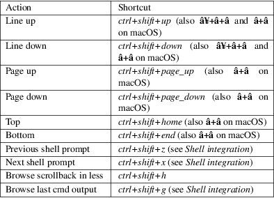
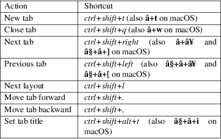
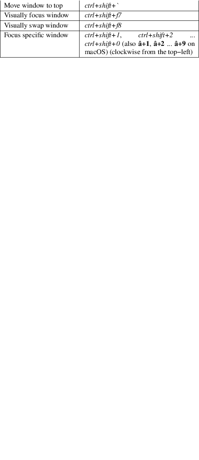
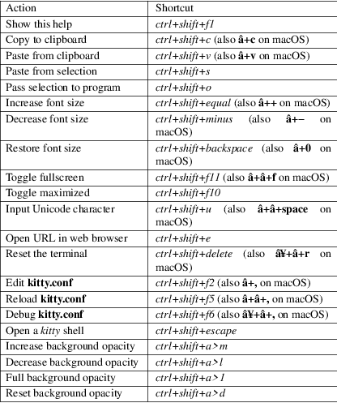

kitty − kitty Documentation
kitty [options] [program−to−run ...]
Run the kitty terminal emulator. You can also specify the program to run inside kitty as normal arguments following the options. For example: kitty −−hold sh −c "echo hello, world"
For comprehensive documentation for kitty, please see: https://sw.kovidgoyal.net/kitty/
−−class <CLS>
Set the class part of the WM_CLASS window property. On Wayland, it sets the app id. Default: kitty
−−name <NAME>
Set the name part of the WM_CLASS property. Defaults to using the value from kitty −−class.
−−title <TITLE>, −T <TITLE>
Set the OS window title. This will override any title set by the program running inside kitty, permanently fixing the OS window's title. So only use this if you are running a program that does not set titles.
−−config <CONFIG>, −c <CONFIG>
Specify a path to the configuration file(s) to use. All configuration files are merged onto the builtin kitty.conf, overriding the builtin values. This option can be specified multiple times to read multiple configuration files in sequence, which are merged. Use the special value NONE to not load any config file.
If this option is not specified, config files are searched for in the order: $XDG_CONFIG_HOME/kitty/kitty.conf, ~/.config/kitty/kitty.conf, $XDG_CONFIG_DIRS/kitty/kitty.conf. The first one that exists is used as the config file.
If the environment variable KITTY_CONFIG_DIRECTORY is specified, that directory is always used and the above searching does not happen.
If /etc/xdg/kitty/kitty.conf exists, it is merged before (i.e. with lower priority) than any user config files. It can be used to specify system−wide defaults for all users. You can use either − or /dev/stdin to read the config from STDIN.
−−override <OVERRIDE>, −o <OVERRIDE>
Override individual configuration options, can be specified multiple times. Syntax: name=value. For example: kitty −o font_size=20
−−directory
<DIRECTORY>, −−working−directory
<DIRECTORY>, −d
<DIRECTORY>
Change to the specified directory when launching. Default: .
−−detach
Detach from the controlling terminal, if any. Not available on macOS.
−−session <SESSION>
Path to a file containing the startup session (tabs, windows, layout, programs). Use − to read from STDIN. See the README file for details and an example. Environment variables in the file name are expanded, relative paths are resolved relative to the kitty configuration directory. The special value none means no session will be used, even if the startup_session option has been specified in kitty.conf.
|
−−hold |
Remain open after child process exits. Note that this only affects the first window. You can quit by either using the close window shortcut or pressing any key. |
−−single−instance, −1
If specified only a single instance of kitty will run. New invocations will instead create a new top−level window in the existing kitty instance. This allows kitty to share a single sprite cache on the GPU and also reduces startup time. You can also have separate groups of kitty instances by using the kitty −−instance−group option.
−−instance−group <INSTANCE_GROUP>
Used in combination with the kitty −−single−instance option. All kitty invocations with the same kitty −−instance−group will result in new windows being created in the first kitty instance within that group.
−−wait−for−single−instance−window−close
Normally, when using kitty −−single−instance, kitty will open a new window in an existing instance and quit immediately. With this option, it will not quit till the newly opened window is closed. Note that if no previous instance is found, then kitty will wait anyway, regardless of this option.
−−listen−on <LISTEN_ON>
Listen on the specified socket address for control messages. For example, kitty −−listen−on=unix:/tmp/mykitty or kitty −−listen−on=tcp:localhost:12345. On Linux systems, you can also use abstract UNIX sockets, not associated with a file, like this: kitty −−listen−on=unix:@mykitty. Environment variables are expanded and relative paths are resolved with respect to the temporary directory. To control kitty, you can send commands to it with kitty @ using the kitty @ −−to option to specify this address. Note that if you run kitty @ within a kitty window, there is no need to specify the kitty @ −−to option as it will automatically read from the environment. Note that this will be ignored unless allow_remote_control is set to either: yes, socket or socket−only. For UNIX sockets, this can also be specified in kitty.conf.
−−start−as <START_AS>
Control how the initial kitty window is created. Default: normal Choices: fullscreen, maximized, minimized, normal
Debugging
options
−−version, −v
The current kitty version.
−−dump−commands
Output commands received from child process to STDOUT.
−−replay−commands <REPLAY_COMMANDS>
Replay previously dumped commands. Specify the path to a dump file previously created by kitty −−dump−commands. You can open a new kitty window to replay the commands with:
kitty sh −c "kitty −−replay−commands /path/to/dump/file; read"
−−dump−bytes <DUMP_BYTES>
Path to file in which to store the raw bytes received from the child process.
−−debug−gl, −−debug−rendering
Debug rendering commands. This will cause all OpenGL calls to check for errors instead of ignoring them. Also prints out miscellaneous debug information. Useful when debugging rendering problems.
−−debug−input, −−debug−keyboard
Print out key and mouse events as they are received.
−−debug−font−fallback
Print out information about the selection of fallback fonts for characters not present in the main font.
−−watcher <WATCHER>
This option is deprecated in favor of the watcher option in kitty.conf and should not be used.
kitty is capable of running multiple programs organized into tabs and windows. The top level of organization is the OS window. Each OS window consists of one or more tabs. Each tab consists of one or more kitty windows. The kitty windows can be arranged in multiple different layouts, like windows are organized in a tiling window manager. The keyboard controls (which are all customizable) for tabs and windows are:
Scrolling

The scroll actions only take effect when the terminal is in the main screen. When the alternate screen is active (for example when using a full screen program like an editor) the key events are instead passed to program running in the terminal.
Tabs

Windows

Additionally, you can define shortcuts in kitty.conf to focus neighboring windows and move windows around (similar to window movement in vim):
map ctrl+left neighboring_window left map shift+left move_window right map ctrl+down neighboring_window down map shift+down move_window up ...
You can also define a shortcut to switch to the previously active window:
map ctrl+p nth_window −1
nth_window will focus the nth window for positive numbers (starting from zero) and the previously active windows for negative numbers.
To switch to the nth OS window, you can define nth_os_window. Only positive numbers are accepted, starting from one.
You can define shortcuts to detach the current window and move it to another tab or another OS window:
# moves the window into a new OS window map ctrl+f2 detach_window # moves the window into a new tab map ctrl+f3 detach_window new−tab # moves the window into the previously active tab map ctrl+f3 detach_window tab−prev # moves the window into the tab at the left of the active tab map ctrl+f3 detach_window tab−left # asks which tab to move the window into map ctrl+f4 detach_window ask
Similarly, you can detach the current tab, with:
# moves the tab into a new OS window map ctrl+f2 detach_tab # asks which OS Window to move the tab into map ctrl+f4 detach_tab ask
Finally, you can define a shortcut to close all windows in a tab other than the currently active window:
map f9 close_other_windows_in_tab
The full list of actions that can be mapped to key presses is available here.

See kitty.conf(5)
Kovid Goyal
2023, Kovid Goyal